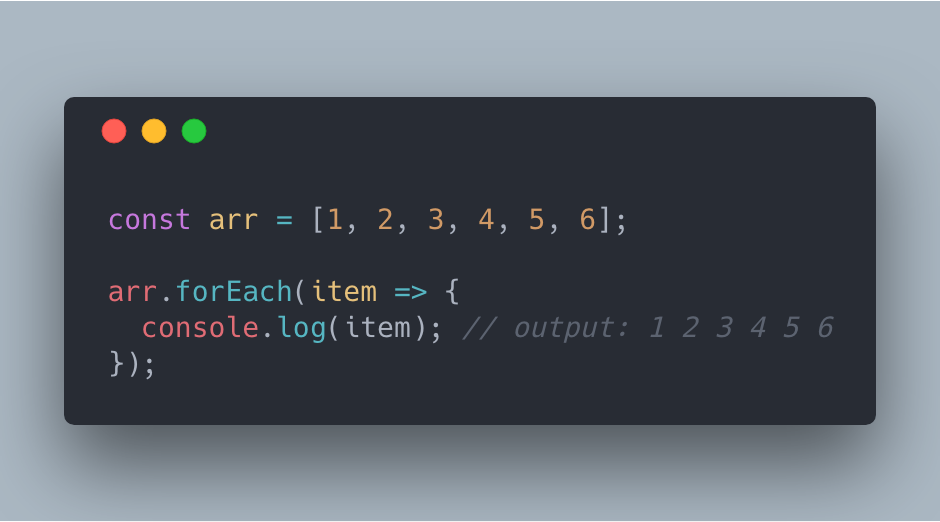
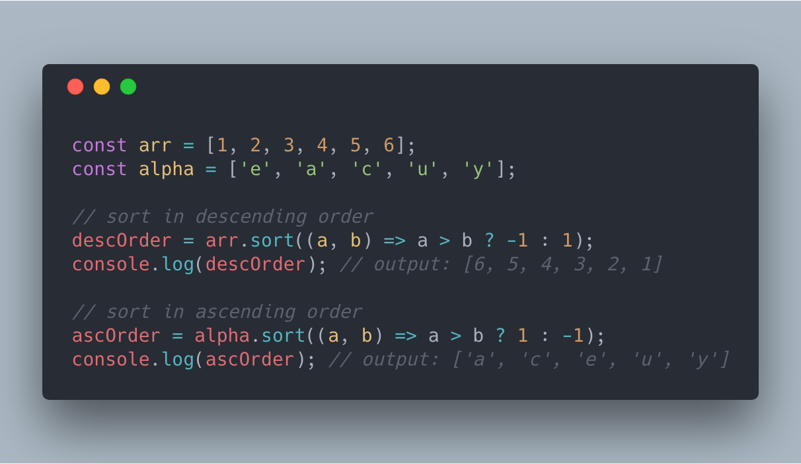
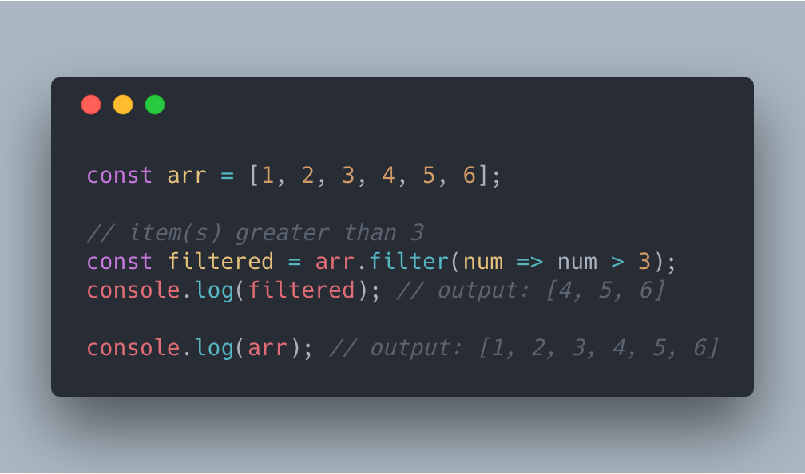
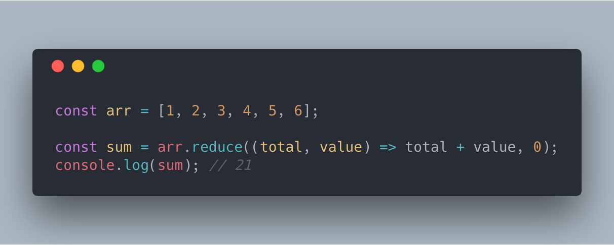
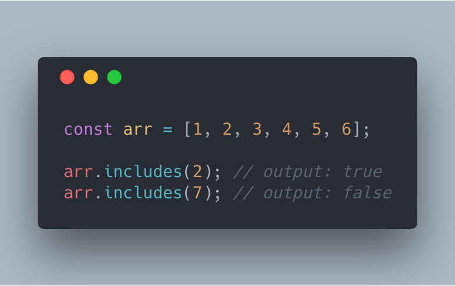
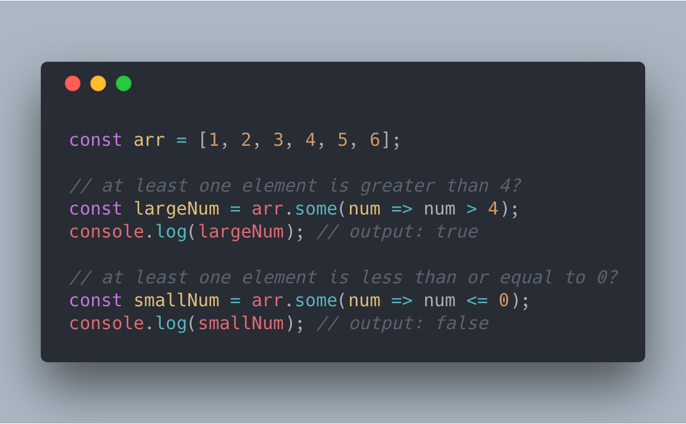
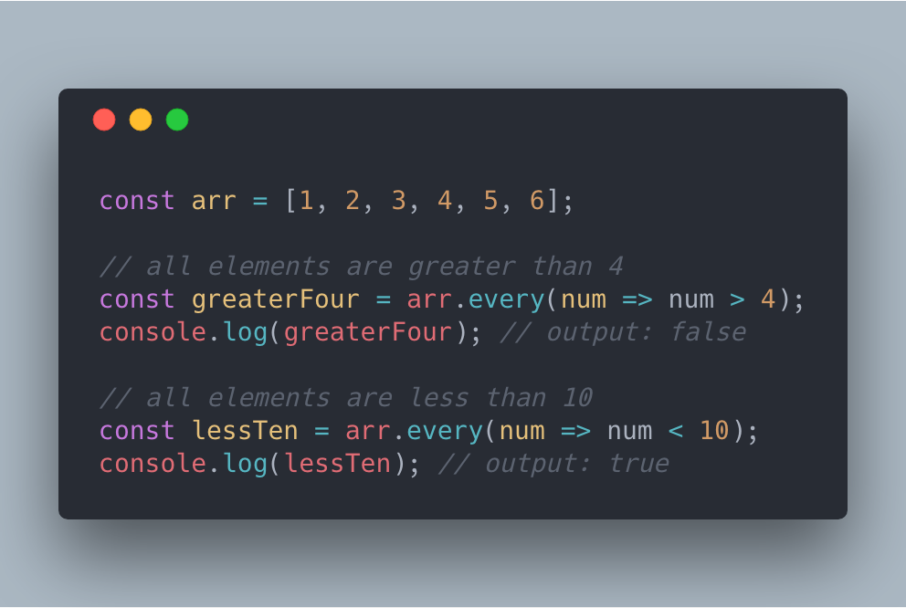
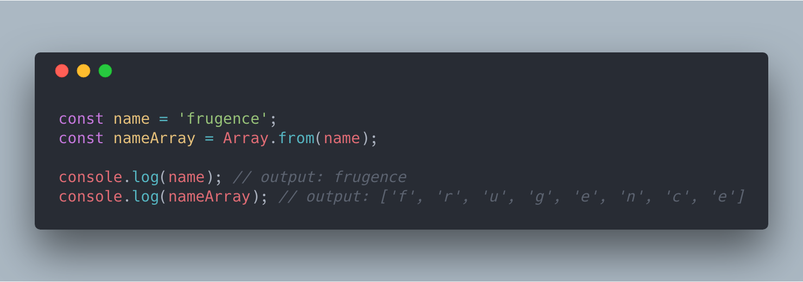
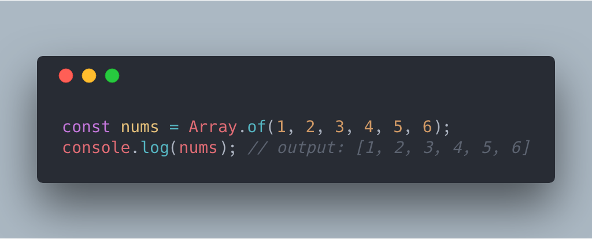
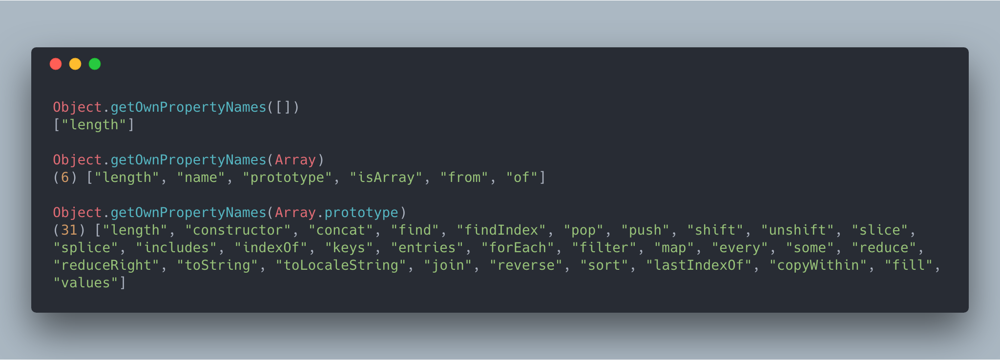

Массивы в

Нетология. Гоник Даниил

Создает новый массив, вызывая коллбэк для каждого элемента изначального массива.

Этот метод может быть полезен для итерации по всем элементам массива.
Название метода само за себя говорит.
Создает новый массив только из тех элементов, которые прошли проверку. Давайте отфильтруем числа, которые больше 3
The reduce() method applies a function against an accumulator and each element in the array (from left to right) to reduce it to a single value (MDN)
Проверяет содержит ли массив заданное значение. Возвращает boolean
Проверяет, что хотя бы один элемент массива проходит проверку. Возвращает boolean
Проверяет, что все элементы массива проходят проверку. Возвращает boolean
Приводит любую массивоподобную структуру данных к настоящему массиву, чтобы была возможность полноценно использовать все методы массивов. Особенно полезно при работе с DOM
Cоздаёт новый экземпляр массива из произвольного числа аргументов, вне зависимости от числа или типа аргумента.
Ну и, конечно же, не забывайте, что вы можете добавлять и свои методы.
| Метод | map | forEach | sort | filter | reduce | includes | some | every | Array.from |
|---|---|---|---|---|---|---|---|---|---|
| Мутирует | нет | нет | да | нет | нет | нет | нет | нет | нет |
| Возвращает | [] | undefined | [] | [] | any | boolean | boolean | boolean | [] |
| Стандарт | ES5 | ES5 | sort | ES5 | ES5 | ES7/ES2016 | ES5 | ES5 | ES6/ES2015 |
Цикломатическая сложность измеряет количество линейно независимых путей в методе, которое определяется числом и сложностью условных ветвей. Низкой цикломатической сложностью, как правило, отличаются методы, которые просты для понимания, проверки и поддержки.